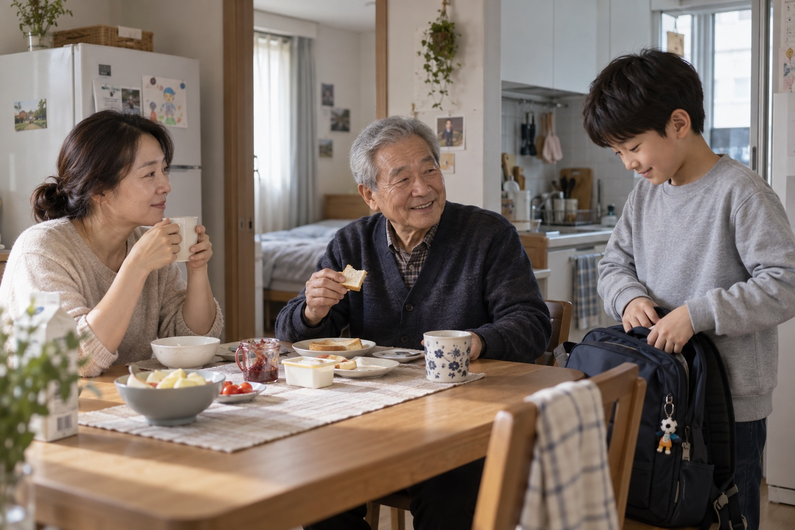
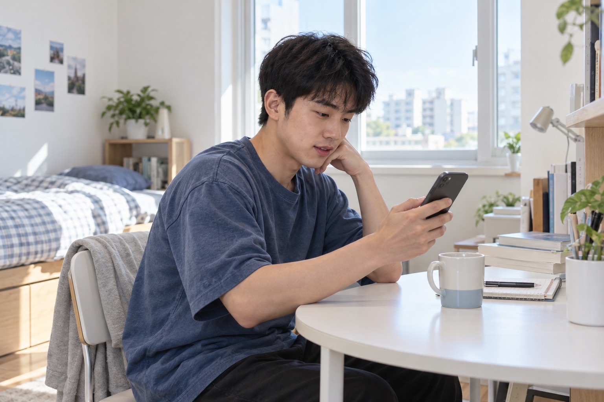

같은 브랜드, 더 많은 사람
기존 여성 캐릭터를 유지하고 다섯 생활의 인물을 확장합니다. 타깃을 특정 성별·주거 유형에 고정하지 않습니다.
맑게 이해하고, 미리 준비하도록.
생활 사진과 정보 모듈을 같은 질서 안에 놓습니다. 변화의 의미와 준비할 일을 가볍고 정확하게 읽는 디자인입니다.
Pretendard · 정보의 정렬
Medium·Semibold의 명확한 위계. 왼쪽 정렬과 일정한 행 길이.
직사각 모듈과 가는 기준선. 장식이 아니라 정보의 구분에 형태를 사용합니다.
그래픽 면적 설계 목표 73 : 12 : 6 : 3 : 4 : 2 · 사진 제외 / 실측값 아님
참조: Base Design · SCDH. 원본의 조판 원리를 재해석하며 로고·작품을 복제하지 않습니다.
한 사람의 이야기를 지우지 않고,
우리 주변의 더 많은 생활로 확장합니다.


처음이라 낯선 계약의 순서를 이해합니다.
바쁜 일상에서 변화와 기한을 확인합니다.
함께 결정하고, 같이 준비합니다.
각자의 생활과 공동의 일정을 맞춥니다.
가족의 하루와 필요한 준비를 함께 살핍니다.
인물의 성별·연령은 각 생활의 한 예시입니다. 모든 사진은 AI 생성 가상 인물이며 실제 고객 사례가 아닙니다.
계약·등기·기한·거주 상황의 변화를 지속적으로 확인합니다.

생활 장면과 안내를 같은 기준선에 정렬합니다. 확인할 지점은 하나만 강조합니다.
살핌 단계에서는 확인 기록에만 포인트를 둡니다. 색은 보장이나 위험 등급을 뜻하지 않습니다.
문제로 이어질 가능성이 있는 변동을 조기에 포착합니다.


생활 장면과 안내를 같은 기준선에 정렬합니다. 확인할 지점은 하나만 강조합니다.
발견 단계에서는 변경 항목에만 포인트를 둡니다. 색은 보장이나 위험 등급을 뜻하지 않습니다.
변화의 의미와 지금 해야 할 일을 이해하기 쉽게 안내합니다.

생활 장면과 안내를 같은 기준선에 정렬합니다. 확인할 지점은 하나만 강조합니다.
준비 단계에서는 준비할 행동에만 포인트를 둡니다. 색은 보장이나 위험 등급을 뜻하지 않습니다.
고객 혼자 처리하기 어려운 시점에 절차·비용·전문가를 연결합니다.

생활 장면과 안내를 같은 기준선에 정렬합니다. 확인할 지점은 하나만 강조합니다.
지원 단계에서는 도움의 연결에만 포인트를 둡니다. 색은 보장이나 위험 등급을 뜻하지 않습니다.
처음 계약하는 사람도 변화와 준비 행동을 구분하도록 돕습니다.
사진 속 사람이 작아지거나 전문 용어가 화면을 지배하지 않도록 합니다.
기존 여성 캐릭터를 유지하고 다섯 생활의 인물을 확장합니다. 타깃을 특정 성별·주거 유형에 고정하지 않습니다.
Pretendard의 위계와 정보의 정렬을 유지합니다. 직사각 모듈과 가는 기준선. 장식이 아니라 정보의 구분에 형태를 사용합니다.
기록을 보고, 변화를 이해하고, 준비하고, 도움을 연결하는 네 단계가 사진과 UI에서 함께 읽혀야 합니다.
설계 가설: 서비스 이해·신뢰·행동 개선은 미검증입니다. 실제 확인 범위·주기·가입 시점·비용·지원 조건은 서비스 정책에 따릅니다.
AI 생성 이미지 / 가상 일정·UI / 내부 디자인 검토용. 참고 사례: Base Design · SCDH.